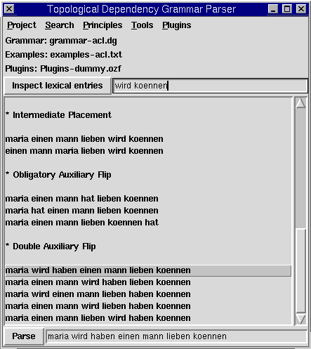
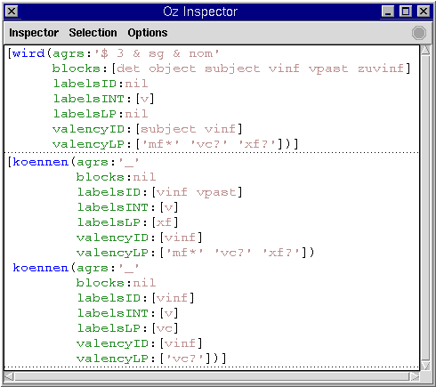
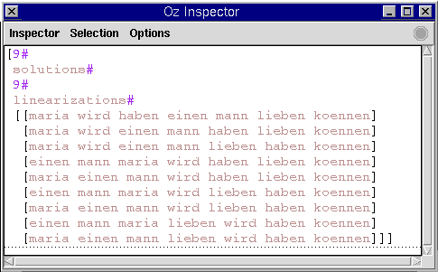
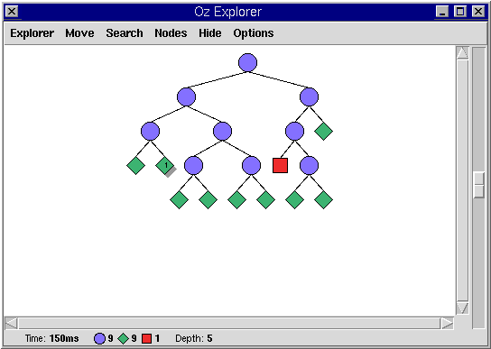
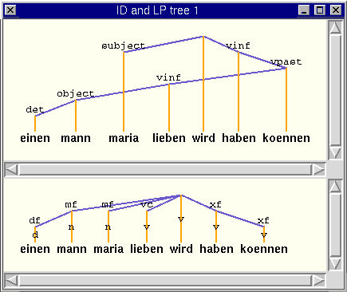

| << Previous | - Up - | Next >> |
TDG.exe.
TDG.exe can be parametrized using commandline parameters
as explained in 5.4 below.
We display the main window of the graphical user interface (GUI) below:

The main window is divided into five parts. The first part is the topmost row of pulldown-menus, consisting of Project, Search, Principles, Tools and Plugins.
The second part is a status display showing which grammar file is currently active (Grammar: grammar-acl.dg), which example file is currently loaded (Examples: examples-acl.dg) and which plugins file (Plugins: Plugins-dummy.ozf).
The third part is made up of a button labeled Inspect lexical
entries and an adjacent text entry field. Here, a list of words
(including also names of lexical types) can be entered (separated by
spaces) whose corresponding lexical entries shall be depicted using
the Oz Inspector. The function is triggered either by pressing the
Inspect lexical entries-button or by pressing the return key
while the text entry field is active. An example output of this
function for the lexical entries wird and
koennen is given below:

The fourth part of the main window is a scrollable listview of example strings. Once clicking on an example string copies it into the text entry field below, and double clicking indicates that the string shall be parsed (this is equivalent with pressing the Parse-button).
The fifth part consists of a button labeled Parse and an adjacent text entry field. In this entry field, the string to parse can be edited. Parsing is triggered either by pressing the Parse-button or by pressing the return key whilst the text entry field is active.
Please bear in mind that each of the pulldown menus can be displayed in a window on their own by selecting the topmost menu entry (consisting of dashes). This can prove particularly useful when a number of switches need to be toggled several times. Also note that menu entries whose name ends with an ellipsis start functions which open a dialog window (e.g. a file requestor). To the right of some menu entries are keyboard shortcuts such as A-w for the menu entry Close tree windows. A-w means that the menu entry can also be invoked by pressing ALT and w simultaneously.
The Project-menu consists of the following menu entries. About... displays an about window. Open all... displays a file requestor where the user is asked to select a grammar file from which the GUI then extracts an identifier <ID> such as "de" or "acl". The GUI then tries to load the grammar file "grammar-<ID>.dg", the examples file "examples-<ID>.txt" and the plugins file "Plugins-<ID>.ozf". If there is no plugins file available for the identifier, the dummy plugins file "Plugins-dummy.ozf" is loaded. Open grammar file... displays a file requestor by which a new grammar file for the parser can be selected. Reload grammar file reloads the currently active grammar file (useful when the grammar has changed). Open examples... loads a new examples file. Examples files are standard text files. Reload examples reloads the currently loaded text file and Append examples... appends an examples file to the list of examples currently loaded. Open plugins... loads a new plugins file. Reload plugins reloads the selected plugins file. Close tree windows closes all windows containing ID, LP or ID/LP analyses which is particularly useful in case the screen is cluttered up by them. Quit quits.
The Search-menu consists of the two parts. The first allows the user to choose between the entries First solution and All solutions First solution means that search stops after the first solution (parse) has been found, and All solutions that all solutions are enumerated. The Generate-menu entry can be used to toggle the generate mode on and off.
The Principles-menu contains a number of switches which can be used to toggle the TDG principles on and off. The first three of these principles are the set of ID principles, the second the set of LP principles and the third the set of ID/LP principles.
The Tools-menu consists of three menu entries: Save trees as LaTeX... allows the user to save all licensed ID/LP analyses of the currently selected sentence (in the Parse text entry field) into a LaTeX-file. The LaTeX-code utilized Denys Duchier's "dtree.sty" style file provided with this package. Notice that the options configured in the Search-menu apply for this function.
The Save test suite...-menu entry starts a function which goes through all strings in the examples file, parses each string and writes statistics about the parse into a text file. The statistics are of the form
maria wird haben einen mann lieben koennen choices:9 failed:1 succeeded:9
where the upper line contains the parsed string and the lower line
information about the search tree: the number of choice points
(choice), of failed spaces (failed) and of
succeeded spaces (succeeded). Note that this function
always searches for all solutions.
The Inspect all linearizations-menu entry uses the generate mode to generate all licensed linearizations of a bag of words. The linearizations are displayed in list form. We give an example output of this function below:

In addition, each of the displayed linearizations can be parsed by selecting the corresponding list in the Inspector and invoke the action Parse from the Inspector's context menu.
The Configure pretty printing... allows to individually toggle Sign-level features on and off when using the Pretty-information action.
Entries in the Plugins-menu are only generated if a non-dummy plugin is active. They are generated on the basis of the plugins-specifications explained in chapter 4.
We employ the Oz Explorer to display the search space traversed during distribution. The Explorer is described in Oz Explorer-Visual Constraint Programming Support. Roughly, blue circles denote choice points (ID/LP analyses which are not yet fully specified) in the search space, green diamonds solutions (fully specified ID/LP analyses) and red boxes failures. If the search space as displayed by the Explorer contains only red boxes, no parse for the string could be found. We show an example Explorer search tree below:

Non-failed nodes in the search tree (blue circles and green diamonds) can be double-clicked to invoke a so-called information action. Information actions are e.g. the graphical display of the ID/LP analysis corresponding to the node in the search tree or a printout of the internal structure of Signs. The user can choose between several information actions using the Explorer's pulldown-menu (menu entry Information Action in the Node-menu), all of which we explain below.
Show prints out the list of Signs on stdio. Browse prints out the list of Signs using the Oz Browser. Inspect does the same using the Oz Inspector. The information action Pretty prints out the list of Signs in prettified, i.e. more readable form using the Inspector. This action takes into account the options set under Configure pretty printing... in the Tools pulldown-menu.The information actions ID tree, LP tree graphically depict ID and LP trees in separate windows and ID and LP tree depicts both trees in one window. Notice that these windows can be all be closed at once using the pulldown-menu function Close tree windows. Here is an example ID/LP tree depiction:

The GUI can be parametrized by command-line arguments. The argument
grammar specifies a grammar to load (the default is
"grammar-de.dg"). The argument examples can be similarly
used to load a specific examples file (default: "examples-de.txt"),
and the argument plugins to load a plugins file (default:
"Plugins-de.ozf"). The argument all can be used to
specify an identifier <ID> such as "de" or "acl". Then, the GUI
loads the grammar file "grammar-<ID>.dg", the examples file
"examples-<ID>.txt" and the plugins file
"Plugins-<ID>.ozf". If there is no plugins file available for
the identifier, the dummy plugins file "Plugins-dummy.ozf" is loaded.
The argument search can be either set to
first (search for the first solution only) or
all (search for all solutions, default). The argument
generate is a boolean argument: it is set to true by
writing --generate and to false by writing
--nogenerate. The default is false.
prettylex, prettyattribute,
prettyid and prettylp are boolean arguments
which can be used to toggle the Sign-level features lex,
attribute, id and lp on and of
when using the Pretty-information action. All of these
arguments default to true.
The following options are all boolean options used to toggle the ID,
LP and ID/LP principles on and off. idacc corresponds to
the ID accepted labels principle, idval to ID valency and
idgamma to ID edge constraints. lporder
corresponds to the LP order principle, lpproj to LP
projectivity, lpacc to the LP accepted labels principle,
lpval to LP valency, lpnode to LP accepted
node labels and lpgamma to LP edge constraints.
climbing corresponds to the ID/LP climbing principle,
subtrees to ID/LP subtrees and barriers to
ID/LP barriers. The default for all of those switches is
true.
Here is an example where the GUI is given the identifier "acl" to load the grammar file "grammar-acl.dg", the examples file "examples-acl.txt" and the dummy plugins file "Plugins-dummy.ozf" (because there is no plugins file for the identifier "acl") searches only for the first solution and switches the LP order principle off:
TDG.exe --all=acl --search=first --nolporder
| << Previous | - Up - | Next >> |